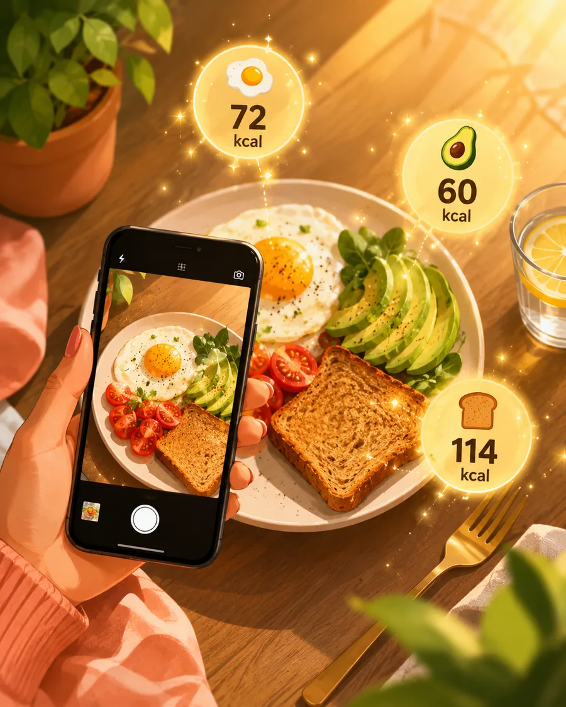
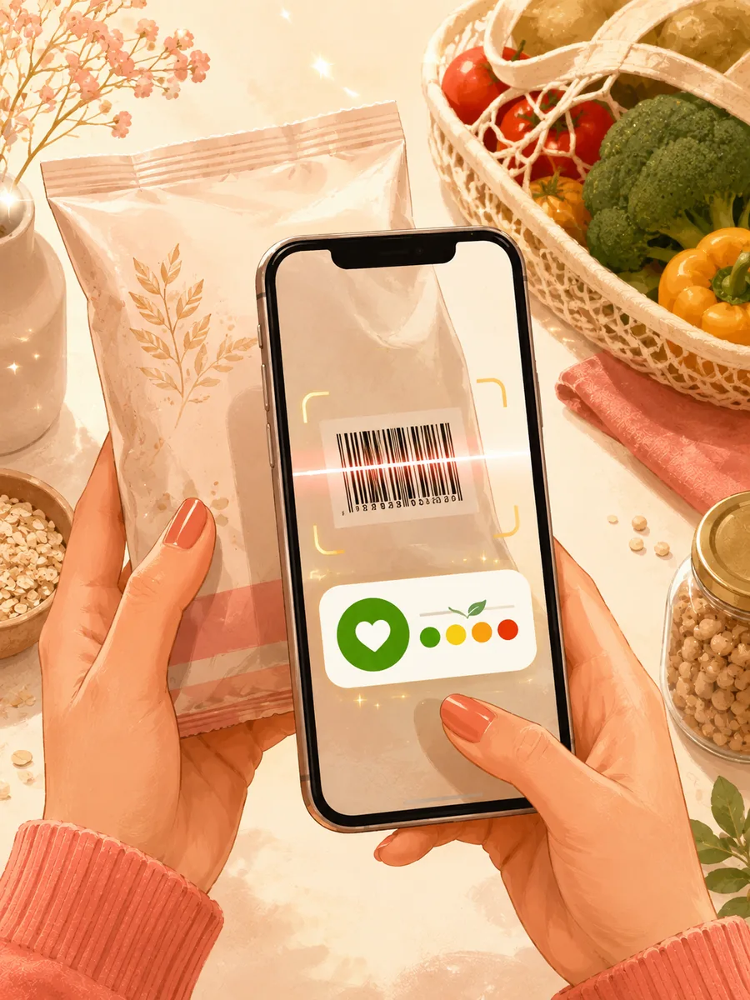
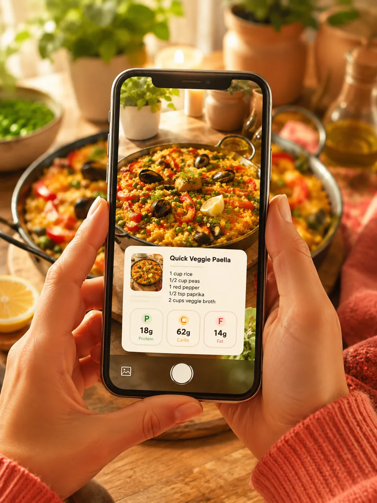
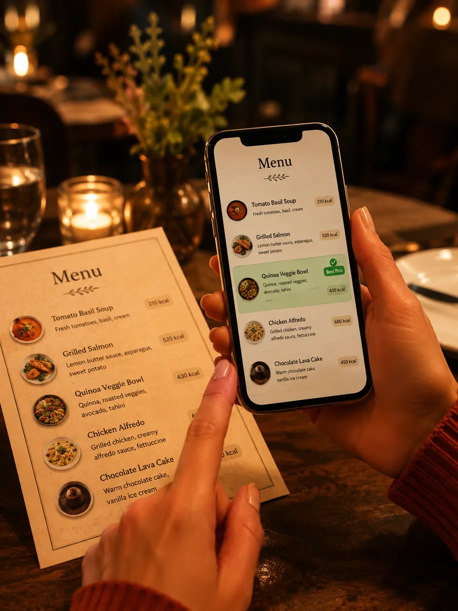
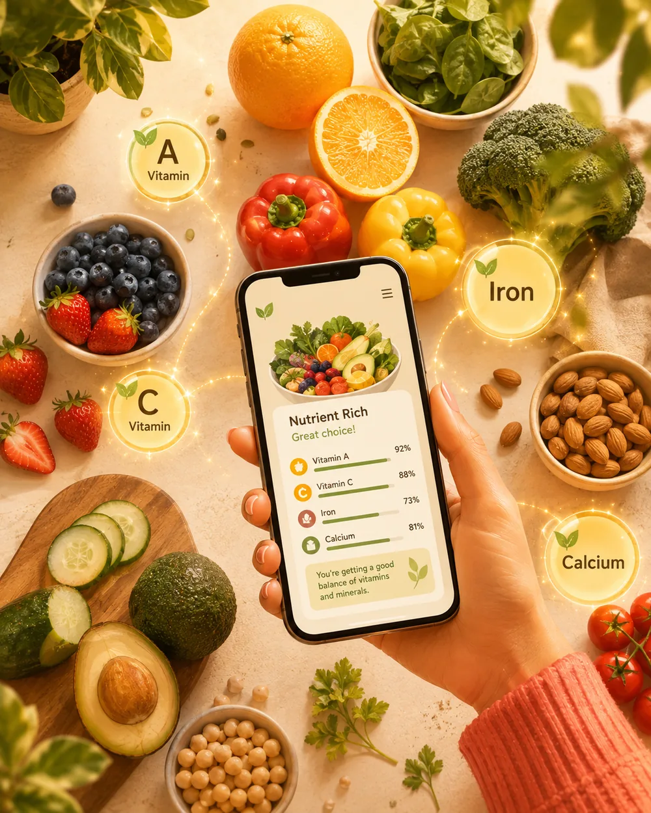
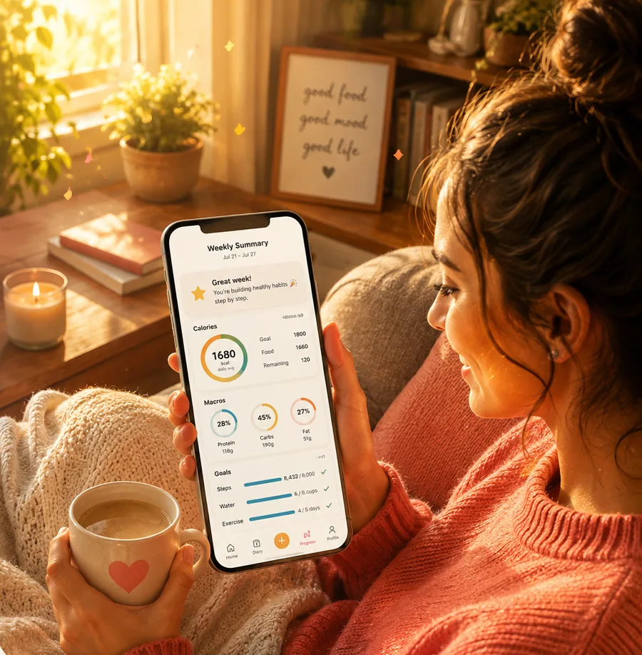

Progreso
Progreso y tendencia de peso — observa tu progreso cada semana
Gráficas claras de tendencia de peso, IMC y seguimiento de objetivos.
Todo lo que hace Fotocal, en una sola página: desde la foto que registra tu comida hasta el informe que resume tu semana. En español y en inglés.
Foto, código de barras, voz o receta. La más rápida en cada momento es la buena, y cada una tiene una página que explica exactamente qué obtienes.
Cinco formas de registrar una comida: foto, código de barras, voz, receta o carta. La más rápida en ese momento es siempre la correcta.

Apunta con la cámara a cualquier plato y obtén calorías, macros y una puntuación de salud en segundos — sin pesar, sin buscar.

Puntuación de salud al instante, nutrición completa y alternativas más sanas para los productos envasados.
Habla con naturalidad y queda registrado con calorías y macros, sin usar las manos.

Fotografía una comida casera y obtén sus ingredientes y macros, listos para guardar.

Fotografía la carta y obtén el plato que mejor encaja con tus calorías restantes y tu objetivo.
Registrar es solo la mitad de la historia. Fotocal convierte cada comida en conocimiento que de verdad puedes usar.

Pregunta lo que quieras, planifica tus comidas o escanea para pedir consejo: orientación inteligente basada en tus datos reales.
Cualquier duda sobre comida, a cualquier hora — respondida desde tu diario real.
Ideas de comidas que encajan con tus calorías restantes y tus objetivos.
Apunta con la cámara y recibe consejo al momento, antes de comer.

Macros completos y micronutrientes: vitaminas, minerales, fibra, azúcar, sodio, nivel de procesamiento NOVA y puntuaciones de glucosa y saciedad.
El progreso vive en semanas, no en días. Estas son las funciones que hacen avanzar la historia.
Gráficas claras de tendencia de peso, IMC y seguimiento de objetivos.
Agua, pasos, hábitos y rachas en una sola pantalla de inicio, bien simple.

Un resumen semanal claro de todo lo que registraste.
Sea lo que sea lo que te trajo aquí — perder peso, comer mejor o conseguir por fin que los hábitos aguanten — las mismas diez funciones se adaptan a tu objetivo.
Sin dietas milagro y sin alimentos prohibidos: un bucle repetible que encaja en la vida real. Fotocal fija un objetivo realista de ~0,5–1 kg por semana, el escaneo por foto hace que registrar sea tan fácil que sobrevive a los días liados, tu anillo de calorías te mantiene en un déficit suave y la gráfica de tendencia suaviza el ruido diario de la báscula para que veas la dirección real.
Entiende lo que comes, no solo cuánto. Cada comida se convierte en una imagen nutricional completa — macros, micronutrientes, puntuación de salud y mejoras sugeridas — y Fotocal nunca te impone una dieta: lleva los números para que tu enfoque elegido sea fácil de seguir.
Pequeñas victorias repetidas: ese es todo el método. Una foto hace que registrar no cueste nada, las rachas convierten la constancia en un juego que quieres proteger, una nota rápida de ánimo revela cómo se conectan comida y emociones, y el informe semanal celebra lo que salió bien en vez de castigar lo que no. Una comida caprichosa no deshace tu progreso; abandonar, sí.
Descarga Fotocal en Google Play y ve cada función en acción: la prueba gratis de 5 días desbloquea todo Premium.
DISPONIBLE EN Google Play